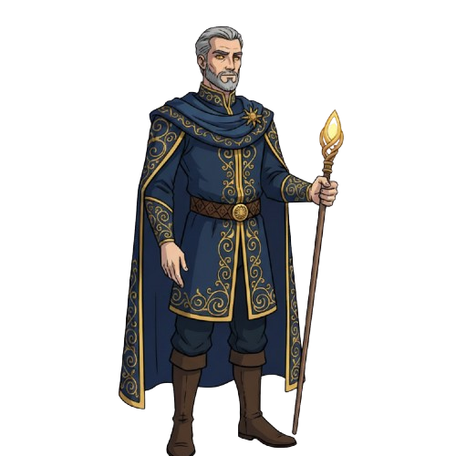
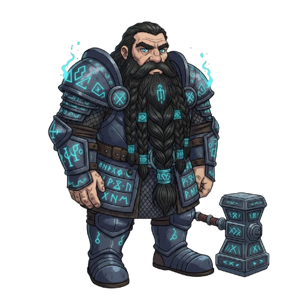
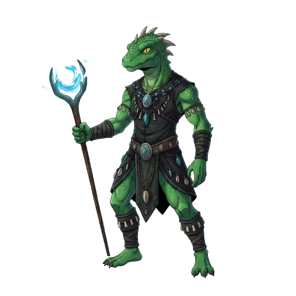
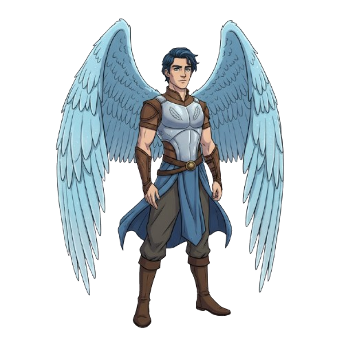

O Conselho dos Guardiões
Selecione um Guardião para conhecer sua raça
 Sylwen
Sylwen

Alden

Thrain

Zakariss

Elarion
 Gromm
Gromm
Escolha um representante acima
Os Guardiões aguardam sua audiência.
🧝 Os Elfos
Representados pela Guardiã Sylwen Arannis.
- Governo: Senhores da Floresta.
- Cultura: Harmonia com a natureza, cidades arbóreas.
- Afinidade: Terra e Vento.
🛡️ Os Humanos
Representados pelo Guardião Alden Valis.
- Governo: Lordes e Reinos Estruturados.
- Cultura: Comércio, inovação e estratégia militar.
- Afinidade: Fogo e Vento.
⛏️ Os Anões
Representados pelo Guardião Thrain Martelferro.
- Governo: Senhores de Montanha.
- Cultura: Engenharia, metalurgia e honra.
- Afinidade: Terra e Fogo.
🦎 Os Lizards
Representados pelo Guardião Zakariss Sythaal.
- Governo: Oráculos do Rio.
- Cultura: Tribal, ligada aos pântanos e rios.
- Afinidade: Terra e Água.
🪂 Povo Alado
Representados pelo Guardião Elarion Skye.
- Governo: Altaneiros.
- Cultura: Cidades suspensas, mensageiros.
- Afinidade: Vento e Água.
🛡️ Os Orcs
Representados pelo legado de Gromm Karthan.
- Governo: Antigo Conselho de Guerreiros.
- Estado Atual: Corrompidos pela Magia Corrupta.
- Afinidade: Terra e Vento.